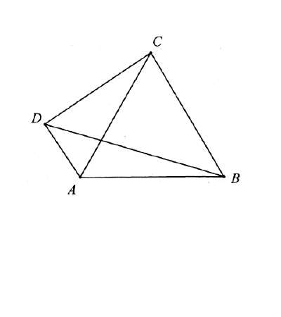

<meta data-alternate="https://freshmark.sunisalex.org/en/" data-article="true" data-canonical="https://freshmark.sunisalex.org/posts/math/2027-strong-foundation-plan/complex-numbers/" data-description="整理《2027强基计划》数学讲义第7章复数，涵盖复数运算、复数乘法与平面旋转、单位根及其应用、复数轨迹与几何应用中的28道例题。" data-freshmark-page data-title="[2027强基计划]复数 — Freshmark"><main><header class="container article-header"><a href="/" class="back-link">← 返回全部文章</a><p class="eyebrow article-subject">数学</p><h1>[2027强基计划]复数</h1><p class="article-dek">整理《2027强基计划》数学讲义第7章复数，涵盖复数运算、复数乘法与平面旋转、单位根及其应用、复数轨迹与几何应用中的28道例题。</p><div class="article-meta"><time datetime="2026-08-04">2026年8月4日</time><span>9 分钟阅读</span><span>数学 · 强基计划 · 复数</span><span class="view-count" data-article-view-count hidden>本文访问量 <strong data-article-views></strong></span><a href="index.md" download>下载 Markdown</a><button type="button" class="article-share" data-share-article data-share-text="整理《2027强基计划》数学讲义第7章复数，涵盖复数运算、复数乘法与平面旋转、单位根及其应用、复数轨迹与几何应用中的28道例题。" data-share-title="[2027强基计划]复数"><span data-share-label>分享文章</span></button><output aria-live="polite" class="visually-hidden" data-share-status role="status"></output></div></header><div class="article-wrap"><aside class="toc"><div class="toc-head"><p>本文目录</p><button type="button" class="toc-toggle" aria-expanded="false" aria-label="展开或收起目录" data-toc-toggle><span class="toc-toggle-label">目录</span><span class="toc-toggle-icon" aria-hidden="true"></span></button></div><nav aria-label="目录" class="toc-links" data-toc-links><a href="#第-7-章-复数" class="toc-level-1">第 7 章 复数</a><a href="#71-复数的表示与运算" class="toc-level-2">7.1 复数的表示与运算</a><a href="#例题-71" class="toc-level-3">例题 7.1</a><a href="#例题-72" class="toc-level-3">例题 7.2</a><a href="#例题-73" class="toc-level-3">例题 7.3</a><a href="#例题-74" class="toc-level-3">例题 7.4</a><a href="#例题-75" class="toc-level-3">例题 7.5</a><a href="#72-复数乘法与平面旋转" class="toc-level-2">7.2 复数乘法与平面旋转</a><a href="#例题-76" class="toc-level-3">例题 7.6</a><a href="#例题-77" class="toc-level-3">例题 7.7</a><a href="#例题-78" class="toc-level-3">例题 7.8</a><a href="#例题-79" class="toc-level-3">例题 7.9</a><a href="#例题-710" class="toc-level-3">例题 7.10</a><a href="#73-单位根及其应用" class="toc-level-2">7.3 单位根及其应用</a><a href="#例题-711" class="toc-level-3">例题 7.11</a><a href="#例题-712" class="toc-level-3">例题 7.12</a><a href="#例题-713" class="toc-level-3">例题 7.13</a><a href="#例题-714" class="toc-level-3">例题 7.14</a><a href="#例题-715" class="toc-level-3">例题 7.15</a><a href="#例题-716" class="toc-level-3">例题 7.16</a><a href="#例题-717" class="toc-level-3">例题 7.17</a><a href="#例题-718" class="toc-level-3">例题 7.18</a><a href="#例题-719" class="toc-level-3">例题 7.19</a><a href="#例题-720" class="toc-level-3">例题 7.20</a><a href="#例题-721" class="toc-level-3">例题 7.21</a><a href="#例题-722" class="toc-level-3">例题 7.22</a><a href="#74-复数的轨迹与几何应用" class="toc-level-2">7.4 复数的轨迹与几何应用</a><a href="#例题-723" class="toc-level-3">例题 7.23</a><a href="#例题-724" class="toc-level-3">例题 7.24</a><a href="#例题-725" class="toc-level-3">例题 7.25</a><a href="#例题-726" class="toc-level-3">例题 7.26</a><a href="#例题-727" class="toc-level-3">例题 7.27</a><a href="#例题-728" class="toc-level-3">例题 7.28</a></nav></aside><article class="prose"><h1 id="第-7-章-复数">第 7 章 复数</h1><h2 id="71-复数的表示与运算">7.1 复数的表示与运算</h2><h3 id="例题-71">例题 7.1</h3><p><strong>题目来源：</strong> 清华大学</p><p>设复数 <span class="math-expression math-inline" data-math-source="z"></span>&#32;满足 <span class="math-expression math-inline" data-math-source="|z|&lt;1"></span>，且</p><p><span class="math-expression math-display" data-math-source="\left|\overline{z}+\frac{1}{z}\right|=\frac{5}{2}," data-math-display></span></p><p>则 <span class="math-expression math-inline" data-math-source="|z|="></span></p><p><strong>A.</strong> <span class="math-expression math-inline" data-math-source="\frac{4}{5}"></span></p><p><strong>B.</strong> <span class="math-expression math-inline" data-math-source="\frac{3}{4}"></span></p><p><strong>C.</strong> <span class="math-expression math-inline" data-math-source="\frac{2}{3}"></span></p><p><strong>D.</strong> <span class="math-expression math-inline" data-math-source="\frac{1}{2}"></span></p><p><strong>解答</strong></p><p>利用 <span class="math-expression math-inline" data-math-source="z\overline{z}=|z|^2"></span>，得：</p><p><span class="math-expression math-display" data-math-source="\begin{gathered} \left|\overline{z}+\frac{1}{z}\right|^2\\ =(\overline{z}+\frac{1}{z})(z+\frac{1}{\overline{z}})\\ =\overline{z}z+\frac{1}{\overline{z}z}+2=\frac{25}{4}\\ \frac{1}{|z|^2}+|z|^2=\frac{17}{4}\\ \Longrightarrow |z|=\frac{1}{2} \end{gathered}" data-math-display></span></p><p>正确答案为D.</p><h3 id="例题-72">例题 7.2</h3><p><strong>题目来源：</strong> 北京大学</p><p>模长为 <span class="math-expression math-inline" data-math-source="1"></span>&#32;的复数 <span class="math-expression math-inline" data-math-source="x,y,z"></span>&#32;满足 <span class="math-expression math-inline" data-math-source="x+y+z\ne0"></span>，求</p><p><span class="math-expression math-display" data-math-source="\left|\frac{xy+yz+zx}{x+y+z}\right|。" data-math-display></span></p><p><strong>解答</strong></p><p>仍然利用<span class="math-expression math-inline" data-math-source="z\overline{z}=|z|^2"></span>: <span class="math-expression math-display" data-math-source="\begin{gathered} \left|\frac{xy+yz+zx}{x+y+z}\right|^2\\ =\frac{xy+yz+zx}{x+y+z}\cdot\frac{\overline{xy}+\overline{yz}+\overline{zx}}{\overline{x}+\overline{y}+\overline{z}}\\ =\frac{xy+yz+zx}{x+y+z}\cdot\frac{\frac{1}{xy}+\frac{1}{yz}+\frac{1}{zx}}{\frac{1}{x}+\frac{1}{y}+\frac{1}{z}}\\ =\frac{xy+yz+zx}{x+y+z}\cdot\frac{x+y+z}{xy+yz+zx}=1\\ \Longrightarrow \left|\frac{xy+yz+zx}{x+y+z}\right|=1 \end{gathered}" data-math-display></span></p><h3 id="例题-73">例题 7.3</h3><p><strong>题目来源：</strong> 清华大学</p><p>求最小正整数 <span class="math-expression math-inline" data-math-source="n"></span>，使得</p><p><span class="math-expression math-display" data-math-source="I=\left(\frac{1}{2}+\frac{1}{2\sqrt{3}}i\right)^n" data-math-display></span></p><p>为纯虚数，并求出 <span class="math-expression math-inline" data-math-source="I"></span>。</p><p><strong>解答</strong></p><p>面对高次指数,最好使用复数的三角形式:</p><p><span class="math-expression math-display" data-math-source="\begin{gathered} I=\left(\frac{1}{2}+\frac{1}{2\sqrt{3}}i\right)^n\\ =(\frac{\sqrt{3}}{3})^n(\frac{\sqrt{3}}{2}+\frac{1}{2}i)^n\\ =(\frac{\sqrt{3}}{3})^n(\cos30^\circ+i\sin30^\circ)^n\\ =(\frac{\sqrt{3}}{3})^n[\cos(30n^\circ)+i\sin(30n^\circ)]\\ \Re(I)=(\frac{\sqrt{3}}{3})^n\cos(30n^\circ)=0\\ n\ge3 \end{gathered}" data-math-display></span></p><h3 id="例题-74">例题 7.4</h3><p><strong>题目来源：</strong> 复旦大学</p><p>设 <span class="math-expression math-inline" data-math-source="z_1,z_2"></span>&#32;为一对共轭复数。如果 <span class="math-expression math-inline" data-math-source="|z_1-z_2|=\sqrt{6}"></span>，且<span class="math-expression math-inline" data-math-source="\frac{z_1}{z_2^2}"></span>为实数，那么 <span class="math-expression math-inline" data-math-source="|z_1|=|z_2|="></span></p><p><strong>A.</strong> <span class="math-expression math-inline" data-math-source="\sqrt{2}"></span></p><p><strong>B.</strong> <span class="math-expression math-inline" data-math-source="2"></span></p><p><strong>C.</strong> <span class="math-expression math-inline" data-math-source="3"></span></p><p><strong>D.</strong> <span class="math-expression math-inline" data-math-source="\sqrt{6}"></span></p><p><strong>解答</strong></p><p><span class="math-expression math-display" data-math-source="\begin{gathered} |z_1-z_2|^2\\ =(z_1-z_2)(z_2-z_1)\\ =-(z_1-z_2)^2=6\\ \Longrightarrow z_1-z_2=\pm\sqrt{6}i\\ 2\Im(z_1)=\pm\sqrt{6}\\ \end{gathered}" data-math-display></span></p><p>或者直接有<span class="math-expression math-inline" data-math-source="|z_1-z_2|=|2\Im(z_1)|=\sqrt{6}\Longrightarrow 2\Im(z_1)=\pm\sqrt{6}"></span>.</p><p><span class="math-expression math-display" data-math-source="\begin{gathered} \frac{z_1}{z_2^2}\in\R\\ \Longleftrightarrow \frac{z_1}{z_2^2}=\frac{z_2}{z_1^2}\\ \frac{z_1}{z_2^2}-\frac{z_2}{z_1^2}\\ =\frac{z_1^3-z_2^3}{(z_1z_2)^2}=0\\ \Longrightarrow z_1^3-z_2^3=(z_1-z_2)(z_1^2+z_1z_2+z_2^2)=0(z_1\ne z_2)\\ z_1^2+z_1z_2+z_2^2=0\\ (z_1-z_2)^2+3z_1z_2=0\\ -6+3z_1z_2=0\\ 3|z_1|^2=6,|z_2|=|z_1|=\sqrt{2} \end{gathered}" data-math-display></span> 可见,求出虚部并不是必须的步骤,可以利用<span class="math-expression math-inline" data-math-source="(z_1-z_2)^2"></span>这一上位的代数关系进行化简求值.</p><p>此外,三角换元面对复数的乘除法不失为良策: <span class="math-expression math-display" data-math-source="\begin{gathered} z_1=r(\cos\theta+i\sin\theta),z_2=r[\cos(-\theta)+i\sin(-\theta)]\\ \frac{z_1}{z_2^2}=\frac{1}{r}(\cos3\theta+i\sin3\theta)\in\R\\ \sin3\theta=0\Longrightarrow \theta=\frac{k\pi}{3}(k\in\Z)\\ |z_1-z_2|=2|r\sin\theta|=\begin{cases} 0,\sin\theta=0\\ \sqrt{3}|r|,\sin\theta=\pm\frac{\sqrt{3}}{2} \end{cases}=\sqrt{6}\\ \Longrightarrow |r|=\sqrt{2} \end{gathered}" data-math-display></span></p><p>正确答案:A</p><h3 id="例题-75">例题 7.5</h3><p>设 <span class="math-expression math-inline" data-math-source="z"></span>&#32;是模为 <span class="math-expression math-inline" data-math-source="1"></span>&#32;的复数，则函数</p><p><span class="math-expression math-display" data-math-source="f(z)=z^2+\frac{1}{z^2}+1" data-math-display></span></p><p>的最小值是 ______。</p><p><strong>解答</strong></p><p>复变函数严格意义上没有最小值的概念,但是这道题暗含着<span class="math-expression math-inline" data-math-source="f(z)\in\R"></span>,所以有最值.</p><p><span class="math-expression math-display" data-math-source="\begin{gathered} f(z)=z^2+\frac{(z\overline{z})^2}{z^2}+1\\ =z^2+\overline{z}^2+1\\ =2[\Re(z)^2-\Im(z)^2]+1\ge2(0-1)+1=-1 \end{gathered}" data-math-display></span></p><p>指数(三角)形式更为简便: <span class="math-expression math-display" data-math-source="\begin{gathered} z=e^{i\theta}\\ f(z)=(e^{2i\theta}+e^{-2i\theta})+1\\ =2\cos2\theta+1\ge-1 \end{gathered}" data-math-display></span></p><h2 id="72-复数乘法与平面旋转">7.2 复数乘法与平面旋转</h2><h3 id="例题-76">例题 7.6</h3><p><strong>题目来源：</strong> 上海交通大学</p><p>已知 <span class="math-expression math-inline" data-math-source="|z|=1"></span>，<span class="math-expression math-inline" data-math-source="k"></span>&#32;是实数，<span class="math-expression math-inline" data-math-source="z"></span>&#32;是复数，求</p><p><span class="math-expression math-display" data-math-source="\left|z^2+kz+1\right|" data-math-display></span></p><p>的最大值。</p><p><strong>解答</strong></p><p>首先需要明确的是,<span class="math-expression math-inline" data-math-source="k"></span>应该是一个给定的值,否则<span class="math-expression math-inline" data-math-source="k\to\infty,\left|z^2+kz+1\right|\to\infty"></span></p><p>对于复数模长问题,我们驾轻就熟: <span class="math-expression math-display" data-math-source="\begin{gathered} \left|z^2+kz+1\right|^2\\ =(z^2+kz+1)(\overline{z}^2+k\overline{z}+1)\\ =(z\overline{z})^2+k^2(z\overline{z})+1\\ +kz\overline{z}(z+\overline{z})+(z^2+\overline{z}^2)+k(z+\overline{z})\\ =1+k^2+1+2k\Re(z)+2[\Re(z)^2-\Im(z)^2]+2k\Re(z)\\ =k^2+4\Re(z)k+2[\Re(z)^2-\Im(z)^2+1]\\ =k^2+4\Re(z)k+4\Re(z)^2\\ =[k+2\Re(z)]^2\\ =\max\{(k-2)^2,(k+2)^2\}\\ =\begin{cases} (k+2)^2,k\ge0\\ (k-2)^2,k&lt;0 \end{cases}\\ \left|z^2+kz+1\right|=\begin{cases} k+2,k\ge0\\ 2-k,k&lt;0 \end{cases}=2+|k| \end{gathered}" data-math-display></span></p><p>事实上,<strong>守前所为而已</strong>并非最佳选项: <span class="math-expression math-display" data-math-source="\begin{gathered} \left|z^2+kz+1\right|\\ =|z|\left|z+k+\frac{1}{z}\right|\\ =\left|z+k+\frac{1}{z}\right|\\ =|2\cos\theta+k|\le|k|+2 \end{gathered}" data-math-display></span></p><h3 id="例题-77">例题 7.7</h3><p><strong>题目来源：</strong> 复旦大学</p><p>已知 <span class="math-expression math-inline" data-math-source="|z|=1"></span>，求</p><p><span class="math-expression math-display" data-math-source="\left|z^2+z+4\right|" data-math-display></span></p><p>的最小值。</p><p><strong>解答</strong> <span class="math-expression math-display" data-math-source="\begin{gathered} \left|z^2+z+4\right|^2\\ =(z^2+z+4)(\overline{z}^2+\overline{z}+4)\\ =(z\overline{z})^2+(z\overline{z})+16\\ +z\overline{z}(z+\overline{z})+4(z^2+\overline{z}^2)+4(z+\overline{z})\\ =1+1+16+2\Re(z)+8[\Re(z)^2-\Im(z)^2]+8\Re(z)\\ =16\Re(z)^2+10\Re(z)+10\ge\frac{135}{16}\\ \left|z^2+z+4\right|\ge\frac{3\sqrt{15}}{4} \end{gathered}" data-math-display></span></p><p><span class="math-expression math-display" data-math-source="\begin{gathered} \left|z^2+z+4\right|\\ =|z+1+\frac{4}{z}|\\ =|1+\cos\theta+i\sin\theta+4(\cos\theta-i\sin\theta)|\\ =|1+5\cos\theta-3i\sin\theta|\\ =\sqrt{(5\cos\theta+1)^2+9\sin^2\theta}\\ =\sqrt{16\cos^2\theta+10\cos\theta+10}\ge\frac{3\sqrt{15}}{4} \end{gathered}" data-math-display></span></p><p><strong>圣人无常师,做题亦无常法</strong>,两种方法此时难分伯仲,不再是三角(指数)形式更加简便了,核心在于虚部无法相消.</p><h3 id="例题-78">例题 7.8</h3><p><strong>题目来源：</strong> 清华大学</p><p>若复数 <span class="math-expression math-inline" data-math-source="z"></span>&#32;满足 <span class="math-expression math-inline" data-math-source="|z^2+1|=|z|"></span>，则</p><p><strong>A.</strong> <span class="math-expression math-inline" data-math-source="\frac{\sqrt{5}-1}{2}\le |z|\le\frac{\sqrt{5}+1}{2}"></span></p><p><strong>B.</strong> <span class="math-expression math-inline" data-math-source="\frac{3-\sqrt{5}}{2}\le |z|\le\frac{3+\sqrt{5}}{2}"></span></p><p><strong>C.</strong> <span class="math-expression math-inline" data-math-source="\arg z\in\left[\frac{\pi}{3},\frac{2\pi}{3}\right]\cup\left[\frac{4\pi}{3},\frac{5\pi}{3}\right]"></span></p><p><strong>D.</strong> <span class="math-expression math-inline" data-math-source="\arg z\in\left[\frac{\pi}{6},\frac{5\pi}{6}\right]\cup\left[\frac{7\pi}{6},\frac{11\pi}{6}\right]"></span></p><p><strong>解答</strong> <span class="math-expression math-display" data-math-source="\begin{gathered} |z^2+1|=|z|(z\ne0)\\ \Longleftrightarrow |z+\frac{1}{z}|=1\\ (z+\frac{1}{z})(\overline{z}+\frac{1}{\overline{z}})=1^2\\ (z^2+1)(\overline{z}^2+1)=z\overline{z}\\ (z\overline{z})^2+z^2+\overline{z}^2+1=|z|^2\\ |z|^4+2[\Re(z)^2-\Im(z)^2]+1=|z|^2\\ |z|^4-|z|^2+1=-2[\Re(z)^2-\Im(z)^2]\in[-2|z|^2,2|z|^2] \end{gathered}" data-math-display></span></p><p>不等式<span class="math-expression math-inline" data-math-source="|z|^4-|z|^2+1\ge-2|z|^2"></span>显然成立,而:</p><p><span class="math-expression math-display" data-math-source="|z|^4-|z|^2+1\le2|z|^2" data-math-display></span></p><p>给出 <span class="math-expression math-inline" data-math-source="|z|^2\in[\frac{3-\sqrt{5}}{2},\frac{3+\sqrt{5}}{2}]"></span>，即 <span class="math-expression math-inline" data-math-source="|z|\in[\frac{\sqrt{5}-1}{2},\frac{\sqrt{5}+1}{2}]"></span>。</p><p>事实上,虽然我们没有使用复数的三角形式,但是辐角主值近在咫尺:</p><p><span class="math-expression math-display" data-math-source="\begin{gathered} |z|^4-|z|^2+1+2[\Re(z)^2-\Im(z)^2]\\ =|z|^2[|z|^2-1+\frac{1}{|z|^2}+2(\cos^2\theta-\sin^2\theta)]\\ |z|^2-1+\frac{1}{|z|^2}+2\cos2\theta=0\\ |z|^2-1+\frac{1}{|z|^2}\in[1,2]\\ \cos2\theta\in[-1,-\frac{1}{2}]\\ \theta\in[0,2\pi)\\ 2\theta\in[\frac{2\pi}{3},\frac{4\pi}{3}]\cup[\frac{8\pi}{3},\frac{10\pi}{3}]\\ \theta\in[\frac{\pi}{3},\frac{2\pi}{3}]\cup[\frac{4\pi}{3},\frac{5\pi}{3}] \end{gathered}" data-math-display></span></p><p>正确答案:AC</p><h3 id="例题-79">例题 7.9</h3><p><strong>题目来源：</strong> 复旦大学</p><p>已知复数</p><p><span class="math-expression math-display" data-math-source="z_1=1+\sqrt{3}i,\qquad z_2=-\sqrt{3}+\sqrt{3}i," data-math-display></span></p><p>则复数 <span class="math-expression math-inline" data-math-source="z_1z_2"></span>&#32;的辐角是</p><p><strong>A.</strong> <span class="math-expression math-inline" data-math-source="\frac{13\pi}{12}"></span></p><p><strong>B.</strong> <span class="math-expression math-inline" data-math-source="\frac{11\pi}{12}"></span></p><p><strong>C.</strong> <span class="math-expression math-inline" data-math-source="-\frac{\pi}{4}"></span></p><p><strong>D.</strong> <span class="math-expression math-inline" data-math-source="-\frac{7\pi}{12}"></span></p><p><strong>解答</strong></p><p><span class="math-expression math-display" data-math-source="\begin{gathered}z_1=2(\cos\frac{\pi}{3}+i\sin\frac{\pi}{3})\\ z_2=\sqrt{6}(\cos\frac{3\pi}{4}+i\sin\frac{3\pi}{4})\\ \frac{\pi}{3}+\frac{3\pi}{4}=\frac{13\pi}{12}\end{gathered}" data-math-display></span></p><p>正确答案:A</p><h3 id="例题-710">例题 7.10</h3><p><strong>题目来源：</strong> 复旦大学</p><p>给定平面向量 <span class="math-expression math-inline" data-math-source="(1,1)"></span>，则平面向量</p><p><span class="math-expression math-display" data-math-source="\left(\frac{1-\sqrt{3}}{2},\frac{1+\sqrt{3}}{2}\right)" data-math-display></span></p><p>是将向量 <span class="math-expression math-inline" data-math-source="(1,1)"></span>&#32;经过</p><p><strong>A.</strong> 顺时针旋转 <span class="math-expression math-inline" data-math-source="60^\circ"></span>&#32;所得</p><p><strong>B.</strong> 顺时针旋转 <span class="math-expression math-inline" data-math-source="120^\circ"></span>&#32;所得</p><p><strong>C.</strong> 逆时针旋转 <span class="math-expression math-inline" data-math-source="60^\circ"></span>&#32;所得</p><p><strong>D.</strong> 逆时针旋转 <span class="math-expression math-inline" data-math-source="120^\circ"></span>&#32;所得</p><p><strong>解答</strong></p><p><span class="math-expression math-display" data-math-source="\begin{gathered}z_1=1+i\\ z_2=\frac{1-\sqrt{3}}{2}+\frac{1+\sqrt{3}}{2}i\\ \frac{z_2}{z_1}=\frac{\frac{1-\sqrt{3}}{2}+\frac{1+\sqrt{3}}{2}i}{1+i}\\ =\frac{\left(\frac{1-\sqrt{3}}{2}+\frac{1+\sqrt{3}}{2}i\right)(1-i)}{2}\\ =\frac{1+\sqrt{3}i}{2}=\cos60^\circ+i\sin60^\circ\end{gathered}" data-math-display></span></p><p>正确答案:C</p><h2 id="73-单位根及其应用">7.3 单位根及其应用</h2><h3 id="例题-711">例题 7.11</h3><p>已知对任意平面向量 <span class="math-expression math-inline" data-math-source="\overrightarrow{AB}=(x,y)"></span>，把 <span class="math-expression math-inline" data-math-source="\overrightarrow{AB}"></span>&#32;绕其起点沿逆时针方向旋转 <span class="math-expression math-inline" data-math-source="\theta"></span>&#32;角得到向量</p><p><span class="math-expression math-display" data-math-source="\overrightarrow{AP}=(x\cos\theta-y\sin\theta,\ x\sin\theta+y\cos\theta)，" data-math-display></span></p><p>叫做把点 <span class="math-expression math-inline" data-math-source="B"></span>&#32;绕点 <span class="math-expression math-inline" data-math-source="A"></span>&#32;沿逆时针方向旋转 <span class="math-expression math-inline" data-math-source="\theta"></span>&#32;角得到点 <span class="math-expression math-inline" data-math-source="P"></span>。已知平面内点 <span class="math-expression math-inline" data-math-source="A(1,2)"></span>，点 <span class="math-expression math-inline" data-math-source="B(1+\sqrt{2},2-2\sqrt{2})"></span>，把点 <span class="math-expression math-inline" data-math-source="B"></span>&#32;绕点 <span class="math-expression math-inline" data-math-source="A"></span>&#32;沿顺时针方向旋转 <span class="math-expression math-inline" data-math-source="\frac{\pi}{4}"></span>&#32;后得到点 <span class="math-expression math-inline" data-math-source="P"></span>，求点 <span class="math-expression math-inline" data-math-source="P"></span>&#32;的坐标。</p><p><strong>解答</strong></p><p><span class="math-expression math-display" data-math-source="\begin{gathered}z_1=1+2i,z_2=(1+\sqrt{2})+(2-2\sqrt{2})i\\ z_3=z_1+(z_2-z_1)\left(\cos\left(-\frac{\pi}{4}\right)+i\sin\left(-\frac{\pi}{4}\right)\right)\\ =1+2i+(\sqrt{2}-2\sqrt{2}i)(\frac{\sqrt{2}}{2}-\frac{\sqrt{2}}{2}i)\\ =1+2i+(-1-3i)=-i\\ \Longrightarrow P(0,-1)\end{gathered}" data-math-display></span></p><h3 id="例题-712">例题 7.12</h3><p>如图，在平面四边形 <span class="math-expression math-inline" data-math-source="ABCD"></span>&#32;中，已知 <span class="math-expression math-inline" data-math-source="AD=1"></span>，<span class="math-expression math-inline" data-math-source="CD=2"></span>，<span class="math-expression math-inline" data-math-source="\triangle ABC"></span>&#32;为等边三角形，记 <span class="math-expression math-inline" data-math-source="\angle ADC=\alpha"></span>。</p><ol><li>若 <span class="math-expression math-inline" data-math-source="\alpha=\frac{\pi}{3}"></span>，求 <span class="math-expression math-inline" data-math-source="\triangle ABD"></span>&#32;的面积；</li><li>若 <span class="math-expression math-inline" data-math-source="\alpha\in\left(\frac{\pi}{2},\pi\right)"></span>，求 <span class="math-expression math-inline" data-math-source="\triangle ABD"></span>&#32;的面积的取值范围。</li></ol><figure class="prose-figure"><picture class="responsive-picture"><source srcset="example-7-12.freshmark-5f85253b64c5-400w.avif 400w" type="image/avif"><source srcset="example-7-12.freshmark-5f85253b64c5-400w.webp 400w" type="image/webp"></picture><figcaption>例题 7.12 的原 PDF 几何示意图</figcaption></figure><p><strong>解答</strong></p><p>事实上,这道题应该先完成(II):</p><p>以<span class="math-expression math-inline" data-math-source="D"></span>为原点,<span class="math-expression math-inline" data-math-source="AD"></span>方向为<span class="math-expression math-inline" data-math-source="x"></span>轴,垂直<span class="math-expression math-inline" data-math-source="AD"></span>方向为<span class="math-expression math-inline" data-math-source="y"></span>轴,建立平面直角坐标系<span class="math-expression math-inline" data-math-source="xDy"></span></p><p><span class="math-expression math-display" data-math-source="\begin{gathered}D(0,0),A(1,0),C(2\cos\alpha,2\sin\alpha)\\ z_1=1,z_2=2\cos\alpha+2i\sin\alpha\\ z_3=z_1+(z_2-z_1)(\cos\frac{-\pi}{3}+i\sin\frac{-\pi}{3})\\ =1+[(2\cos\alpha-1)+2i\sin\alpha](\frac{1}{2}-\frac{\sqrt{3}}{2}i)\\ =1+\{[\frac{2\cos\alpha-1}{2}+\sqrt{3}\sin\alpha]+[\sin\alpha-\frac{\sqrt{3}}{2}(2\cos\alpha-1)]i\}\end{gathered}\\" data-math-display></span></p><p>事实上,我们只关心<span class="math-expression math-inline" data-math-source="z_3"></span>虚部的绝对值(也就是B点到AD的距离):</p><p><span class="math-expression math-display" data-math-source="\begin{gathered}\Im(z_3)=\sin\alpha-\frac{\sqrt{3}}{2}(2\cos\alpha-1)\\ =\sin\alpha-\sqrt{3}\cos\alpha+\frac{\sqrt{3}}{2}\\ =2\sin(\alpha-\frac{\pi}{3})+\frac{\sqrt{3}}{2}\\ \alpha\in\left(\frac{\pi}{2},\pi\right),\alpha-\frac{\pi}{3}\in(\frac{\pi}{6},\frac{2\pi}{3})\\ \sin(\alpha-\frac{\pi}{3})\in(\frac{1}{2},1]\\ h=|\Im(z_3)|\in(1+\frac{\sqrt{3}}{2},2+\frac{\sqrt{3}}{2}]\\ S_{\triangle ABD}(\alpha)=\frac{1}{2}AD\cdot h=\sin(\alpha-\frac{\pi}{3})+\frac{\sqrt{3}}{4}\in(\frac{\sqrt{3}+2}{4},\frac{\sqrt{3}+{4}}{4}]\\ S_{\triangle ABD}(\frac{\pi}{3})=\frac{\sqrt{3}}{4}\end{gathered}" data-math-display></span></p><h3 id="例题-713">例题 7.13</h3><p><strong>题目来源：</strong> 复旦大学</p><p>已知数 <span class="math-expression math-inline" data-math-source="x"></span>&#32;满足</p><p><span class="math-expression math-display" data-math-source="x+\frac{1}{x}=-1，" data-math-display></span></p><p>求</p><p><span class="math-expression math-display" data-math-source="x^{300}+\frac{1}{x^{300}}" data-math-display></span></p><p>的值。</p><p><strong>解答</strong></p><p>显然,对于实数<span class="math-expression math-inline" data-math-source="x\in\R,x+\frac{1}{x}\ne-1"></span>,故<span class="math-expression math-inline" data-math-source="x\in\C"></span>. <span class="math-expression math-display" data-math-source="\begin{gathered}x=r(\cos\theta+i\sin\theta),r\gt0,\sin\theta\ne0\\ x+\frac{1}{x}=(r\cos\theta+\frac{1}{r}\cos\theta)+(r\sin\theta-\frac{1}{r}\sin\theta)=-1\\ \Longrightarrow r-\frac{1}{r}=0,r=+1\\ 2\cos\theta=-1,\cos\theta=-\frac{1}{2}\\ \theta=\frac{2\pi}{3}\text{ or }\frac{4\pi}{3}\\ x^{300}+\frac{1}{x^{300}}=2\cos(300\theta)=+2\end{gathered}" data-math-display></span></p><p>或者考虑单位根:</p><p><span class="math-expression math-display" data-math-source="\begin{gathered}x^2+x+1=0\\ x^3-1=(x-1)(x^2+x+1)=0\\ x^{3n}=(x^3)^n=1\\ x^{300}+\frac{1}{x^{300}}=1+1=2\end{gathered}" data-math-display></span></p><h3 id="例题-714">例题 7.14</h3><p><strong>题目来源：</strong> 2026 北京大学</p><p>已知复数 <span class="math-expression math-inline" data-math-source="z"></span>&#32;满足 <span class="math-expression math-inline" data-math-source="z^5=\overline{z}"></span>，则满足该方程的复数 <span class="math-expression math-inline" data-math-source="z"></span>&#32;的个数为 ______。</p><p><strong>解答</strong></p><p><span class="math-expression math-display" data-math-source="\begin{gathered}|z^5|=|\overline{z}|\\ |z|^5=|z|\Longrightarrow |z|=1\text{ or }0\\ |z|=0\Longrightarrow z=0\\ |z|=1\Longrightarrow z^5=\frac{1}{z},z^6=1\end{gathered}" data-math-display></span></p><p>总之,<span class="math-expression math-inline" data-math-source="z"></span>要么是<span class="math-expression math-inline" data-math-source="0"></span>,要么是六次单位根,有7种可能</p><h3 id="例题-715">例题 7.15</h3><p><strong>题目来源：</strong> 上海交通大学</p><p>设方程 <span class="math-expression math-inline" data-math-source="x^3=1"></span>&#32;的一个虚数根为 <span class="math-expression math-inline" data-math-source="\omega"></span>，则</p><p><span class="math-expression math-display" data-math-source="\omega^{2n}+\omega^n+1=\underline{\hspace{3em}}，" data-math-display></span></p><p>其中 <span class="math-expression math-inline" data-math-source="n"></span>&#32;是正整数。 <span class="math-expression math-display" data-math-source="\begin{gathered}\omega^3-1=(\omega-1)(\omega^2+\omega+1)=0(\omega\ne1)\\ \omega^2+\omega+1=0\\ \omega^{2n}+\omega^n+1=\begin{cases}\omega^2+\omega+1=0,n\equiv1(mod3)\\ \omega^2+\omega+1=0,n\equiv2(mod3)\\ 3,n\equiv0(mod3)\end{cases}\end{gathered}" data-math-display></span></p><p><strong>解答</strong></p><h3 id="例题-716">例题 7.16</h3><p><strong>题目来源：</strong> 清华大学</p><p>设</p><p><span class="math-expression math-display" data-math-source="(1+x+x^2)^{10}" data-math-display></span></p><p>的展开式为 <span class="math-expression math-inline" data-math-source="a_0+a_1x+\cdots+a_{20}x^{20}"></span>，则</p><p><span class="math-expression math-display" data-math-source="\sum_{k=0}^{6}a_{3k}=" data-math-display></span></p><p><strong>A.</strong> <span class="math-expression math-inline" data-math-source="3^9"></span></p><p><strong>B.</strong> <span class="math-expression math-inline" data-math-source="3^{10}"></span></p><p><strong>C.</strong> <span class="math-expression math-inline" data-math-source="2^{19}"></span></p><p><strong>D.</strong> <span class="math-expression math-inline" data-math-source="2^{20}"></span></p><p><strong>解答</strong></p><p>有例7.15为鉴,可知单位根有&quot;筛选&quot;的功能,我们利用之:</p><p><span class="math-expression math-display" data-math-source="\begin{gathered}\omega^2+\omega+1=0\\ (1+\omega+\omega^2)^{10}=a_0+a_1\omega+\cdots+a_{20}\omega^{20}\\ =(a_0+a_3+a_6+\cdots+a_{18})+(a_1+a_4+a_7+\cdots+a_{19})\omega+(a_2+a_5+a_8+\cdots+a_{20})\omega^2\\ =0\\ (1+\omega^2+\omega^4)^{10}=a_0+a_1\omega^2+\cdots+a_{20}\omega^{40}\\ =(a_0+a_3+a_6+\cdots+a_{18})+(a_1+a_4+a_7+\cdots+a_{19})\omega^2+(a_2+a_5+a_8+\cdots+a_{20})\omega\\ =0\\ (1+\omega^3+\omega^6)^{10}=a_0+a_1\omega^3+\cdots+a_{20}\omega^{60}\\ =(a_0+a_3+a_6+\cdots+a_{18})+(a_1+a_4+a_7+\cdots+a_{19})+(a_2+a_5+a_8+\cdots+a_{20})\\ =3^{10}\end{gathered}" data-math-display></span></p><p>联立三个式子(三个式子相加),恰好得到<span class="math-expression math-inline" data-math-source="3x=3^{10}"></span>,然后可以解出三个括号<span class="math-expression math-inline" data-math-source="x,y,z"></span>的值:</p><p><span class="math-expression math-display" data-math-source="\begin{gathered}\begin{cases}x+y\omega+z\omega^2=0,\\ x+y\omega^2+z\omega=0,\\ x+y+z=3^{10}\end{cases}\Longrightarrow x=y=z=3^9\end{gathered}" data-math-display></span></p><p>正确答案:A</p><h3 id="例题-717">例题 7.17</h3><p><strong>题目来源：</strong> 上海交通大学</p><p><span class="math-expression math-inline" data-math-source="\omega"></span>&#32;是方程 <span class="math-expression math-inline" data-math-source="x^5=1"></span>&#32;的一个非实数根，则</p><p><span class="math-expression math-display" data-math-source="\omega(\omega+1)(\omega^2+1)=\underline{\hspace{3em}}。" data-math-display></span></p><p><strong>解答</strong></p><p><span class="math-expression math-display" data-math-source="\begin{gathered}\omega(\omega+1)(\omega^2+1)\\ =(\omega^2+\omega)(\omega^2+1)\\ =\omega^4+\omega^3+\omega^2+\omega\\ =\frac{\omega^5-\omega}{\omega-1}(\omega\ne1)\\ =\frac{1-\omega}{\omega-1}=-1\end{gathered}" data-math-display></span></p><h3 id="例题-718">例题 7.18</h3><p><strong>题目来源：</strong> 清华大学</p><p>求</p><p><span class="math-expression math-display" data-math-source="2+2e^{0.4\pi i}+e^{1.2\pi i}" data-math-display></span></p><p>的模。</p><p><strong>解答</strong></p><p>换元重复出现的部分:</p><p><span class="math-expression math-display" data-math-source="\begin{gathered}\omega=e^{\frac{2\pi}{5}i}\\ \omega^5=e^{2\pi i}=1\\|2+2e^{0.4\pi i}+e^{1.2\pi i}|^2\\ =(2+2\omega+\omega^3)(2+2\overline{\omega}+\overline{\omega}^3)\\ =4+4\omega\overline{\omega}+{\omega\overline{\omega}}^3\\ +4(\omega+\overline{\omega})+2(\omega^3+\overline{\omega}^3)+2\omega\overline{\omega}(\omega^2+\overline{\omega}^2)\\ =4+4+1+4(\omega+\omega^4)+2(\omega^3+\omega^2)+2(\omega^2+\omega^3)\\ =9+4(\omega+\omega^2+\omega^3+\omega^4)\\ =9+4\frac{\omega^5-\omega}{\omega-1}(\omega\ne1)\\ =9-4=5\end{gathered}" data-math-display></span></p><p><strong>勘误（Claude 补充）</strong></p><blockquote><p>本节由 Claude（Anthropic 开发的 AI 模型）补充，附在作者解答之后，并非原作者所写。</p></blockquote><p>上面算出的是模的平方：<span class="math-expression math-inline" data-math-source="|2+2e^{0.4\pi i}+e^{1.2\pi i}|^2=5"></span>，所以所求的模为 <span class="math-expression math-inline" data-math-source="\sqrt5"></span>（已数值核对）。</p><h3 id="例题-719">例题 7.19</h3><p><strong>题目来源：</strong> 清华大学</p><p>设</p><p><span class="math-expression math-display" data-math-source="w=\cos\frac{2\pi}{5}+i\sin\frac{2\pi}{5},\qquad P(x)=x^2+x+2，" data-math-display></span></p><p>则</p><p><span class="math-expression math-display" data-math-source="P(w)P(w^2)P(w^3)P(w^4)=" data-math-display></span></p><p><strong>A.</strong> <span class="math-expression math-inline" data-math-source="9"></span></p><p><strong>B.</strong> <span class="math-expression math-inline" data-math-source="10"></span></p><p><strong>C.</strong> <span class="math-expression math-inline" data-math-source="11"></span></p><p><strong>D.</strong> <span class="math-expression math-inline" data-math-source="12"></span></p><p><strong>解答</strong></p><p>这道题需要一个&quot;分解+重装&quot;的小技巧:</p><p><span class="math-expression math-display" data-math-source="\begin{gathered}x^2+x+2=(x-\alpha)(x-\beta)\\ \begin{cases}\alpha+\beta=-1,\\ \alpha\beta=2\\\end{cases}\\ \Phi(x)=x^4+x^3+x^2+x+1=\Pi_{k=1}^4(x-\omega^k)=\Pi_{k=1}^4(\omega^k-x)\\ \Pi_{k=1}^4[(\omega^k)^2+(\omega)^k+2]\\ =\Pi_{k=1}^4(\omega^k-\alpha)(\omega^k-\beta)\\ =\Pi_{k=1}^4(\omega^k-\alpha)\Pi_{k=1}^4(\omega^k-\beta)\\ =\Phi(\alpha)\Phi(\beta)\end{gathered}" data-math-display></span></p><p>接下来,我们利用<span class="math-expression math-inline" data-math-source="\alpha,\beta"></span>是方程<span class="math-expression math-inline" data-math-source="x^2+x+2=0"></span>的根进行降次:</p><p><span class="math-expression math-display" data-math-source="\begin{gathered}x^2=-x-2\\x^3=x^2\cdot x=(-x-2)x\\ =-x^2-2x=-x+2\\ x^4=(x^2)^2=(-x-2)^2\\ =x^2+4x+4\\ =3x+2\\ \Phi(x)=(3x+2)+(-x+2)+(-x-2)+x+1\\ =2x+3\end{gathered}" data-math-display></span></p><p>化简<span class="math-expression math-inline" data-math-source="\Phi(\alpha)\Phi(\beta)"></span>:</p><p><span class="math-expression math-display" data-math-source="\begin{gathered}\Phi(\alpha)\Phi(\beta)\\ =(2\alpha+3)(2\beta+3)\\ =4\alpha\beta+6(\alpha+\beta)+9\\ =8-6+9=11\end{gathered}" data-math-display></span> 除此以外,我们还有别的配对视角:</p><p><span class="math-expression math-display" data-math-source="\begin{gathered}P(w^3)=P(\overline{\omega^2})=\overline{P(\omega^2)}\\ P(w)P(w^2)P(w^3)P(w^4)\\ =|P(w)P(w^2)|^2\\ =|(\omega^2+\omega+2)(\omega^4+\omega^2+2)|^2\\ =|\omega^6+\omega^5+3\omega^4+\omega^3+4\omega^2+2\omega+4|^2\\ =|3\omega^4+\omega^3+4\omega^2+3\omega+5|^2\\ =(3\omega^4+\omega^3+4\omega^2+3\omega+5)(3\omega+\omega^2+4\omega^3+3\omega^4+5)\\ 3\omega^4+\omega^3+4\omega^2+3\omega+5\\ =3(-\omega^3-\omega^2-\omega-1)+\omega^3+4\omega^2+3\omega+5\\ =-2\omega^3+\omega^2+2\\ 3\omega+\omega^2+4\omega^3+3\omega^4+5=\omega^3-2\omega^2+2\\ |P(w)P(w^2)|^2\\ =(-2\omega^3+\omega^2+2)(\omega^3-2\omega^2+2)\\ =-2\omega^6+5\omega^5-2\omega^4-2\omega^3-2\omega^2+4\\ =9-2(\omega+\omega^2+\omega^3+\omega^4)=11\end{gathered}" data-math-display></span></p><h3 id="例题-720">例题 7.20</h3><p><strong>题目来源：</strong> 北京大学</p><p>求证：</p><p><span class="math-expression math-display" data-math-source="\cos\frac{2\pi}{11}+\cos\frac{4\pi}{11}+\cos\frac{6\pi}{11}+\cos\frac{8\pi}{11}+\cos\frac{10\pi}{11}=-\frac{1}{2}。" data-math-display></span></p><p><strong>解答</strong></p><p>构造11次单位根:<span class="math-expression math-inline" data-math-source="w^{11}=1"></span>:</p><p><span class="math-expression math-display" data-math-source="\begin{gathered}1+\omega+\omega^2+\omega^3+\cdots+\omega^{10}=1\\ \Re(1+\omega+\omega^2+\omega^3+\cdots+\omega^{10})=1\\ \Re[1+2(\omega^2+\omega^4+\omega^6+\omega^8+\omega^{10})]=1\\ \cos\frac{2\pi}{11}+\cos\frac{4\pi}{11}+\cos\frac{6\pi}{11}+\cos\frac{8\pi}{11}+\cos\frac{10\pi}{11}\\ =\Re(\omega^2+\omega^4+\omega^6+\omega^8+\omega^{10})=-\frac{1}{2}\end{gathered}" data-math-display></span></p><p><strong>勘误（Claude 补充）</strong></p><blockquote><p>本节由 Claude（Anthropic 开发的 AI 模型）补充，附在作者解答之后，并非原作者所写。</p></blockquote><p><span class="math-expression math-inline" data-math-source="11"></span>&#32;次单位根之和为 <span class="math-expression math-inline" data-math-source="0"></span>：<span class="math-expression math-inline" data-math-source="1+\omega+\cdots+\omega^{10}=\frac{\omega^{11}-1}{\omega-1}=0"></span>，上面两处的“<span class="math-expression math-inline" data-math-source="=1"></span>”应为“<span class="math-expression math-inline" data-math-source="=0"></span>”。由 <span class="math-expression math-inline" data-math-source="1+2\,\Re(\omega^2+\omega^4+\cdots+\omega^{10})=0"></span>&#32;才得到结论 <span class="math-expression math-inline" data-math-source="-\frac12"></span>；若按“<span class="math-expression math-inline" data-math-source="=1"></span>”计算，结论会变成 <span class="math-expression math-inline" data-math-source="0"></span>。</p><h3 id="例题-721">例题 7.21</h3><p><strong>题目来源：</strong> 2025 北京大学 <span class="math-expression math-display" data-math-source="\sum_{i=1}^{1012}(-1)^{i+1}\cos\frac{i\pi}{2025}=\underline{\hspace{3em}}。" data-math-display></span></p><p><strong>解答</strong></p><p>设<span class="math-expression math-inline" data-math-source="\omega=-e^{\frac{\pi}{2025}i}=-\cos\frac{\pi}{2025}-i\sin\frac{\pi}{2025}"></span>,则:</p><p><span class="math-expression math-display" data-math-source="\begin{gathered}\omega^{2025}=(-1)^{2025}e^{\pi i}=1,|\omega|=1,\overline{\omega^k}=\frac{1}{\omega^k}=\omega^{2025-k}\\ \omega^{2025}-1\\ =(\omega-1)(1+\omega+\omega^2+\omega^3+\cdots+\omega^{2024})=0(\omega\ne1)\\ 1+\omega+\omega^2+\omega^3+\cdots+\omega^{2024}=0\\ \Re(1+\omega+\omega^2+\omega^3+\cdots+\omega^{2024})\\ =\Re[1+2(\omega+\omega^2+\omega^3+\cdots+\omega^{1012})]=0\\ 1-\sum_{i=1}^{1012}(-1)^{i+1}\cos\frac{i\pi}{2025}=0\\ \sum_{i=1}^{1012}(-1)^{i+1}\cos\frac{i\pi}{2025}=+\frac{1}{2}\end{gathered}" data-math-display></span></p><h3 id="例题-722">例题 7.22</h3><p><strong>题目来源：</strong> 2026 北京大学</p><p>单位圆内接正 <span class="math-expression math-inline" data-math-source="2026"></span>&#32;边形的一个顶点到其余 <span class="math-expression math-inline" data-math-source="2025"></span>&#32;个顶点的距离之积为 ______。</p><p><strong>解答</strong></p><p>考虑2026次单位根: <span class="math-expression math-display" data-math-source="\omega^{2026}=1" data-math-display></span></p><p>这2026个复数在复平面上表示单位圆内接正2026边形的2026个顶点,则所求为:</p><p><span class="math-expression math-display" data-math-source="|(1-\omega)(1-\omega^2)(1-\omega^3)\cdots(1-\omega^{2025})|" data-math-display></span></p><p>仍然考虑单位根对应的因式分解:</p><p><span class="math-expression math-display" data-math-source="\begin{gathered}\Phi(x)=1+x+x^2+\cdots+x^{2025}\\ =(x-\omega)(x-\omega^2)\cdots(x-\omega^{2025})\end{gathered}" data-math-display></span></p><p>由此可知:</p><p><span class="math-expression math-display" data-math-source="\begin{gathered}|(1-\omega)(1-\omega^2)(1-\omega^3)\cdots(1-\omega^{2025})|\\ =|\Phi(1)|=2026\end{gathered}" data-math-display></span></p><p>可见,对于任意<span class="math-expression math-inline" data-math-source="n"></span>边形,乘积均为<span class="math-expression math-inline" data-math-source="n(n=3,4,\cdots)"></span>,容易验证<span class="math-expression math-inline" data-math-source="n"></span>较小的情况.</p><h2 id="74-复数的轨迹与几何应用">7.4 复数的轨迹与几何应用</h2><h3 id="例题-723">例题 7.23</h3><p><strong>题目来源：</strong> 同济大学</p><p><span class="math-expression math-inline" data-math-source="i"></span>&#32;为虚数单位。设复数 <span class="math-expression math-inline" data-math-source="z"></span>&#32;满足 <span class="math-expression math-inline" data-math-source="|z|=1"></span>，则</p><p><span class="math-expression math-display" data-math-source="\left|\frac{z^2-2z+2}{z-1+i}\right|" data-math-display></span></p><p>的最大值为 ______。</p><p><strong>解答</strong></p><p>有了例7.19,例7.22的铺垫,可知&quot;遇事不决,因式分解&quot;:</p><p><span class="math-expression math-display" data-math-source="\begin{gathered}\left|\frac{z^2-2z+2}{z-1+i}\right|\\ =\left|\frac{(z-1+i)(z-1-i)}{z-1+i}\right|\\ =|z-1-i|\le\sqrt{2}+1\end{gathered}" data-math-display></span></p><h3 id="例题-724">例题 7.24</h3><p><strong>题目来源：</strong> 复旦大学</p><p>在复平面上，满足方程</p><p><span class="math-expression math-display" data-math-source="z\overline{z}+z+\overline{z}=3" data-math-display></span></p><p>的复数 <span class="math-expression math-inline" data-math-source="z"></span>&#32;对应点的轨迹是</p><p><strong>A.</strong> 圆</p><p><strong>B.</strong> 两个点</p><p><strong>C.</strong> 线段</p><p><strong>D.</strong> 直线</p><p><strong>解答</strong></p><p><span class="math-expression math-display" data-math-source="\begin{gathered}|z|^2+2\Re(z)=3\\ z=x+yi(x,y\in\R)\\ x^2+y^2+2x=3\\ (x+1)^2+y^2=4\end{gathered}" data-math-display></span></p><p>正确答案:A</p><h3 id="例题-725">例题 7.25</h3><p><strong>题目来源：</strong> 清华大学</p><p>若复数</p><p><span class="math-expression math-display" data-math-source="\frac{\omega-1}{\omega+1}" data-math-display></span></p><p>的实部为 <span class="math-expression math-inline" data-math-source="0"></span>，<span class="math-expression math-inline" data-math-source="z"></span>&#32;是复平面上与复数</p><p><span class="math-expression math-display" data-math-source="\frac{1}{\omega+1}" data-math-display></span></p><p>对应的点，则点 <span class="math-expression math-inline" data-math-source="z"></span>&#32;的轨迹是</p><p><strong>A.</strong> 一条直线</p><p><strong>B.</strong> 一条线段</p><p><strong>C.</strong> 一个圆</p><p><strong>D.</strong> 一段圆弧</p><p><strong>解答</strong></p><p><span class="math-expression math-display" data-math-source="\begin{gathered}\omega=x+yi(x,y\in\R)\\ \frac{\omega-1}{\omega+1}=1-\frac{2}{\omega+1}\\ =1-2z\\ \Re(1-2z)=0\Longrightarrow \Re(z)=\frac{1}{2}\end{gathered}" data-math-display></span></p><p>正确答案:A一条直线<span class="math-expression math-inline" data-math-source="x=\frac{1}{2}"></span></p><h3 id="例题-726">例题 7.26</h3><p><strong>题目来源：</strong> 复旦大学</p><p>已知 <span class="math-expression math-inline" data-math-source="|z|=r"></span>，<span class="math-expression math-inline" data-math-source="r&gt;1"></span>，则</p><p><span class="math-expression math-display" data-math-source="\frac{1}{z}+z" data-math-display></span></p><p>在复平面内的轨迹是</p><p><strong>A.</strong> 焦距为 <span class="math-expression math-inline" data-math-source="4"></span>&#32;的椭圆</p><p><strong>B.</strong> 焦距为 <span class="math-expression math-inline" data-math-source="2"></span>&#32;的椭圆</p><p><strong>C.</strong> 焦距为 <span class="math-expression math-inline" data-math-source="\frac{r}{4}"></span>&#32;的椭圆</p><p><strong>D.</strong> 焦距为 <span class="math-expression math-inline" data-math-source="\frac{r}{2}"></span>&#32;的椭圆</p><p><strong>解答</strong></p><p><span class="math-expression math-display" data-math-source="\begin{gathered}z+\frac{1}{z}\\ =(r\cos\theta+\frac{1}{r}\cos\theta)+(r\sin\theta-\frac{1}{r}\sin\theta)i\end{gathered}" data-math-display></span></p><p>我们面临一个问题:点<span class="math-expression math-inline" data-math-source="(r\cos\theta+\frac{1}{r}\cos\theta,r\sin\theta-\frac{1}{r}\sin\theta)"></span>在平面上代表的点的轨迹是什么?</p><p>事实上,换一种写法:<span class="math-expression math-inline" data-math-source="((r+\frac{1}{r})\cos\theta,(r-\frac{1}{r})\sin\theta)"></span></p><p>一切便水落石出,椭圆参数中:</p><p><span class="math-expression math-display" data-math-source="\begin{cases}a=r+\frac{1}{r},\\ b=r-\frac{1}{r},\\ c=\sqrt{a^2-b^2}=+2\end{cases}" data-math-display></span></p><p>所以,焦距为<span class="math-expression math-inline" data-math-source="2c=4"></span>.</p><p>正确答案:A</p><h3 id="例题-727">例题 7.27</h3><p><strong>题目来源：</strong> 安徽省数学竞赛改编</p><p>设 <span class="math-expression math-inline" data-math-source="z"></span>&#32;是复数，则</p><p><span class="math-expression math-display" data-math-source="|z-1|+|z-i|+|z+1|" data-math-display></span></p><p>的最小值等于</p><p><strong>A.</strong> <span class="math-expression math-inline" data-math-source="2"></span></p><p><strong>B.</strong> <span class="math-expression math-inline" data-math-source="1+\sqrt{2}"></span></p><p><strong>C.</strong> <span class="math-expression math-inline" data-math-source="1+\sqrt{3}"></span></p><p><strong>D.</strong> <span class="math-expression math-inline" data-math-source="3"></span></p><p><strong>解答</strong></p><p>从几何意义上看,这就是著名的&quot;费马点&quot;问题:</p><p>这里我们不加以详细讨论,直接沿用经典结论:</p><p><span class="math-expression math-display" data-math-source="d_1+d_2+d_3\ge2\frac{2\sqrt3}{3}+(1-\frac{\sqrt{3}}{3})=\sqrt{3}+1" data-math-display></span></p><h3 id="例题-728">例题 7.28</h3><p><strong>题目来源：</strong> 2025 北京大学</p><p>复数 <span class="math-expression math-inline" data-math-source="z_1"></span>&#32;对应的点在线段连接的点 <span class="math-expression math-inline" data-math-source="2"></span>&#32;与点 <span class="math-expression math-inline" data-math-source="2i"></span>&#32;之间运动，且 <span class="math-expression math-inline" data-math-source="|z_2|=1"></span>，求复数 <span class="math-expression math-inline" data-math-source="z_1+2z_2"></span>&#32;对应的点在复平面上扫过的区域的面积。</p><p><strong>解答</strong></p><p>想象一个半径为2的圆盘,在以<span class="math-expression math-inline" data-math-source="(2,0),(0,2)"></span>为端点的线段长滑动,划过区域的面积为:</p><p><span class="math-expression math-display" data-math-source="\begin{gathered}\pi\cdot2^2+2\sqrt{2}\cdot4=4(\pi+2\sqrt2)\end{gathered}" data-math-display></span></p><p><strong>更正：扫过的区域不是整个“跑道形”（Claude 补充）</strong></p><blockquote><p>本节由 Claude（Anthropic 开发的 AI 模型）补充，附在作者解答之后，并非原作者所写。</p></blockquote><p><span class="math-expression math-inline" data-math-source="|z_2|=1"></span>&#32;只表示 <span class="math-expression math-inline" data-math-source="2z_2"></span>&#32;落在半径为 <span class="math-expression math-inline" data-math-source="2"></span>&#32;的<strong>圆周</strong>上，不是圆盘。所以 <span class="math-expression math-inline" data-math-source="z_1+2z_2"></span>&#32;扫过的是一族圆周（圆心 <span class="math-expression math-inline" data-math-source="z_1"></span>&#32;在线段 <span class="math-expression math-inline" data-math-source="AB"></span>&#32;上，<span class="math-expression math-inline" data-math-source="A=2,\ B=2i"></span>）的并集，而不是一族圆盘的并集。</p><p>点 <span class="math-expression math-inline" data-math-source="P"></span>&#32;被扫到，当且仅当线段上存在 <span class="math-expression math-inline" data-math-source="c"></span>&#32;使 <span class="math-expression math-inline" data-math-source="|P-c|=2"></span>。由于 <span class="math-expression math-inline" data-math-source="|P-c|"></span>&#32;随 <span class="math-expression math-inline" data-math-source="c"></span>&#32;在线段上连续变化，这等价于</p><p><span class="math-expression math-display" data-math-source="\operatorname{dist}(P,AB)\le2\le\max\{|PA|,|PB|\}." data-math-display></span></p><p>第一个条件给出作者计算的跑道形区域，面积 <span class="math-expression math-inline" data-math-source="4\pi+8\sqrt2"></span>；第二个条件去掉了到 <span class="math-expression math-inline" data-math-source="A,B"></span>&#32;距离都小于 <span class="math-expression math-inline" data-math-source="2"></span>&#32;的点，即两个半径为 <span class="math-expression math-inline" data-math-source="2"></span>、圆心距 <span class="math-expression math-inline" data-math-source="|AB|=2\sqrt2"></span>&#32;的圆盘的公共部分（透镜形），其面积为</p><p><span class="math-expression math-display" data-math-source="2\cdot2^2\arccos\frac{2\sqrt2}{4}-\frac{2\sqrt2}{2}\sqrt{16-8}=2\pi-4 ." data-math-display></span></p><p>所以扫过的面积为</p><p><span class="math-expression math-display" data-math-source="4\pi+8\sqrt2-(2\pi-4)=2\pi+4+8\sqrt2\approx21.60 ," data-math-display></span></p><p>而不是 <span class="math-expression math-inline" data-math-source="4\pi+8\sqrt2\approx23.88"></span>。我用蒙特卡罗方法数值核对过（约 <span class="math-expression math-inline" data-math-source="21.60"></span>）。</p></article></div><section class="container comments" data-comments data-comments-path="/posts/math/2027-strong-foundation-plan/complex-numbers/"><div class="comments-head"><div><p class="eyebrow">评论</p><h2 data-comments-title>评论</h2></div><p>登录后参与讨论。注册时只需验证一次邮箱。</p></div><div class="comment-list" aria-live="polite" data-comment-list><p class="comment-state" data-comment-state>正在加载评论…</p></div><button type="button" class="comment-more" data-comments-more hidden>加载更早的评论</button><div class="comment-auth" data-comment-auth><p class="comment-auth-status" data-auth-loading>正在检查登录状态…</p><div hidden data-auth-guest><form class="comment-auth-form" data-auth-login><h3>登录后评论</h3><label>邮箱<input autocomplete="email" name="email" maxlength="254" required type="email"></label><label>密码<input autocomplete="current-password" name="password" maxlength="128" required type="password"></label><div class="comment-form-foot"><p class="comment-form-status" role="status" data-auth-login-status></p><button type="submit">登录</button></div></form><details class="comment-register"><summary>还没有账号？注册</summary><form class="comment-auth-form" data-auth-register><label>昵称<input autocomplete="name" name="name" maxlength="40" required></label><label>邮箱<input autocomplete="email" name="email" maxlength="254" required type="email"></label><label>密码<input autocomplete="new-password" name="password" maxlength="128" required type="password" minlength="8"></label><p class="comment-auth-hint">至少 8 个字符。</p><div class="comment-form-foot"><p class="comment-form-status" role="status" data-auth-register-status></p><button type="submit">注册</button></div></form></details></div><form class="comment-auth-form" hidden data-auth-verify><p>验证码已发送到邮箱，请在 10 分钟内完成注册。</p><label>六位验证码<input autocomplete="one-time-code" name="code" maxlength="6" required minlength="6" inputmode="numeric" pattern="[0-9]{6}"></label><div class="comment-form-foot"><p class="comment-form-status" role="status" data-auth-verify-status></p><button type="submit">完成注册</button></div></form><div class="comment-auth-user" data-auth-user hidden><p>当前登录： <strong data-auth-user-name></strong> <span data-auth-user-email></span></p><button type="button" data-auth-logout>退出登录</button></div></div><form class="comment-form" hidden data-comment-form><label>评论内容<textarea maxlength="2000" minlength="2" name="body" placeholder="写下你的想法…" required rows="5"></textarea></label><p class="comment-markdown-hint">支持 Markdown：加粗、链接、引用、列表和代码。</p><label aria-hidden="true" class="comment-honeypot">Website<input autocomplete="off" name="website" tabindex="-1"></label><div class="comment-form-foot"><p class="comment-form-status" role="status" data-comment-form-status></p><button type="submit" data-comment-submit>发表评论</button></div></form></section></main>